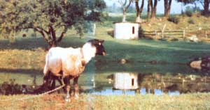

Below: Still more proof-this time from Hatsy Taylor of East Canaan, Connecticutthat you don't have to be wealthy to afford a sauna.
My husband and I knew the very first time we experienced the pleasures of sauna bathing many years ago that we wanted-someday-to have a sauna of our very own. (in the best Finnish tradition, we wanted our bathhouse to be outdoors-next to our pond-so we could dunk ourselves in cold water immediately after each steaming.) Due to a chronic cash shortage, however, our "dream sauna" remained just that?a dream?for a long time.
But then-about three years ago-the farmer down the road from us decided to replace his old, wooden silo with a fancy now one. So we decided to ask him if we could use the wood from his old silo to construct our long-awaited sauna. Sure, enough, he was delighted to have us cart the many silo staves away.
We couldn't have been happier with the deal! The staves were a lovely weather worn gray, all tongue-and-groove, and in excellent condition (silage is a great wood preserver). And there were more than enough of the curved boards to construct the pint-sized silo-sauna we had in mind.
We'd already chosen the construction site: a spot at the end of our lawn where a sorry-looking clump of brambles was growing out of a rock pile. After clearing away the thorny plants, we used a stick and string to measure off a circle 10' in diameter. Then we leveled the site, setting aside the many stones for later use.
Next, we made forms for our sauna's concrete floor from some aluminum garden edging we'd found at the dump. (The 5"-high barrier was held in a circular shape by a series of small stakes driven into the ground around its outside. Any material capable of being bent into a 10'diameter circle- thin plywood, hardboard, etc.?would've worked just as well.) Afterwards, we poured a 5"-thick slab, which we reinforced with old chicken wire, pieces of iron, and the rocks we had set aside while clearing the site. (We decided not to use footings, since we figured the slab would merely "float" without cracking if the frost heaved it.) As soon as the concrete began to set, we laid one course of bricks around its edge.
The next day, Henry and I filled in the gaps between the bricks, built a simple door frame, and cut all our staves to a uniform 8' length (except for the six staves-which were much shorter-that were to go above the door). Then we began to build the sauna's walls.
Putting the sections of silo up was just like assembling a giant barrel: First we jammed the tongue-and-groove boards together (hint: don't try this on a windy day!) ... then we looped 1/8" cable around the hollow "barrel" at both its top and its bottom and tightened the two cables with turnbuckles. When we were finished, the big barrel literally just sat atop the bricks. (We didn't-and don't intend to-anchor the structure in place.)
At this point, the only thing our minisilo lacked was a roof. So we simply ran a single 4" X 6" crossbeam across the top of the structure and nailed silo staves to it. The roofing staves stuck out every which way at first, but it was easy to [1] use our string compass to draw an 11' diameter circle on the roof (so that we'd have a 6" overhang), then [2] trim the boards with our trusty saber saw to make the roof perfectly round. An application of monkey dung (our name for roofing tar) and tar paper completed the job.
For heat, we outfitted our silo-sauna with a wood-burning stove that we made ourselves from a 30-gallon drum. (The stovepipe goes out through a tin-lined hole in the wall near the door and extends to well above roof level. The pipe is capped-at the top-with a tin hat to keep rain out.) On top of the stove is -a wire basket to hold the all-important smooth, round stones (which we took from a near by riverbed). Naturally, we allowed the rocks to dry thoroughly before heating them, so that they wouldn't shatter.
Since we've never found hard benches very comfortable for sauna bathing, we chose to build a large, 3'-high platform against the wall opposite the door and stove. That platform now holds two wooden deck chairs and two wooden canvas slingbacks (which are utterly delicious to relax in).
Except for some caulking around the base of the building, no added insulation was needed for our tightly constructed silo-sauna to reach temperatures of 220°F or more. Even when outside temperatures hover near zero and the wind howls below the window (we couldn't resist putting a piece of plate glass in the door, even if it did mean trading off a little heat), the air inside the sauna is blissfully hot.
Now that our sweatbath is up and standing, we're glad we decided to put it where it is ... because we find that we swim in the pond after bathing from early fall right up until ice begins to form (our record-so far-is November 26), and as early as April in the spring. It can be a long, chilly walk from the house to the silo-sauna on a snowy winter night ... but the stroll back is always a lovely, lazy one through the snowflakes, with our bodies throwing off steam in the sub-freezing air.
In the summer months (when we rarely sauna), our mini-silo serves as a combination bathhouse and storage area for garden tools. Someday, we intend to sod the roof with daisies and black-eyed Susans, to improve the little silo's appearance even further ... but, for now, we're more than content with the way our silo-sauna looks (and performs). In fact, we wouldn't trade it for all the saunas in Finland!
|
 |
|
|